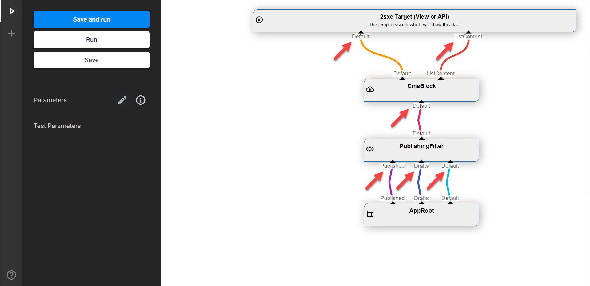
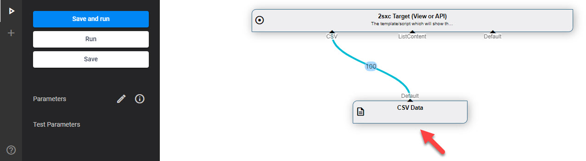

VisualQuery: In Streams
DataSources often have In Streams. Some are required and some are optional. There are three common cases:
- No In-Streams because the DataSource generates data (eg. the Sql DataSource)
- In-Streams which supply data for processing
- In-Streams which simply supply configuration
The counterpart of In-Streams are Out-Streams.
This is what In-Streams look like in VisualQuery:
The Three Common Cases
Case 1: DataSources without In-Streams
Root DataSources generate or get data, and don't need an In-Stream. Here's an example from a CSV DataSource.
Case 2: In-Streams for Data Processing
This is a most common case, where a datasource gets one or more streams, and filter or modify the content. Here's an example of the StreamPick DataSource which has 3 inbound streams, and picks the one called Default to pass on:
Case 3: In-Streams for Configuration
In addition to data providing In-Streams, a DataSource may also use the data from an In to get a setting.
In these cases the first item in the stream can be used as a parameter in the Settings using In-Lookups like [In:Module:Category]. Read more about In-LookUps.
In-Stream Names
The names on an In-Stream are important since they affect how the stream is used.
Note that the names must be unique. This is case-insensitive, so Default and default are regarded as the same name and wouldn't be valid.
Pre-Named In-Streams
If the DataSource has special In-Streams which have a pre-defined purpose they are pre-named. This example of the ValueFilter DataSource can run a filter on Default, and if it ends up empty, can deliver a Fallback stream:
- The Country filter - it didn't find anything in the
Defaultfor the filter, so it receives 11 items and forwards 11 items from theFallback - Test data for Country is blank
- The Industry filter - it did find something, so it only forwards the 2 matching items
- Test data for the Industry expects
Web
Dynamic In-Streams
Some DataSources can handle an infine amount of In-Streams like the StreamPick DataSource. This is indicated by the orange 🔺 on mouse-over:

This means you can connect as many In-Streams as you want. Just make sure the names are unique.
Rename In-Streams
You can always rename a connection by clicking on the name and typing in a new name.
Required vs. Optional In-Streams
Some streams are optional, some are required. In the example of the ValueFilter above, the Default is required, and the Fallback is optional.
In-Streams Cannot be Re-Used
An Out-Stream can be connected to multiple In-Streams but the opposite is not possible. So an In can only have one source, but an Out can give it's data to multiple In sources.
Nice to Know
- By convention, the default In-stream is called
Default - In-Streams have data which can be used, but they are not accessed until you really need them
History
- Introduced ca. in 2sxc 6
- Dynamic-In has existed since 2sxc 6 but the visual queue was added in 2sxc 11.13